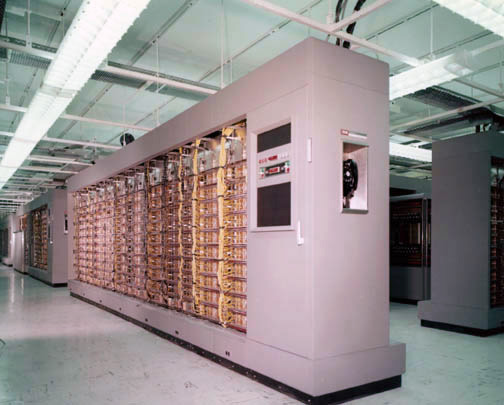
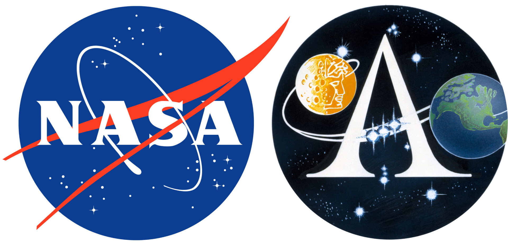

Margaret Hamilton

« Looking back, we were the luckiest people in the world. There was no choice but to be pioneers; no time to be beginners. »
Margaret Elaine Heafield (nom de naissance) est née à Paoli dans l'Indiana, le 17 août 1936. Elle est la fille de Kenneth Heafield et Ruth Esther Heafield et est de nationalité américaine. Elle est aujourd'hui âgé de 84 ans et est toujours PDG de Hamilton Technologies, Inc.
-
Education
Après avoir fini ses années de lycée au Hancock High School, en 1954, elle étudie les mathématiques à l'Université du Michigan en 1955, avant d'obtenir sa licence (Bachelor of Arts) de mathématiques au sein du Earlham College en 1958.
Elle déménage dans l'État du Massachusetts avec l'intention de poursuivre des études de Mathématiques pures à l'Université Brandeis mais finalement choisit d'intégrer le MIT en 1960 pour développer des programmes informatiques de prévision météorologique sur des ordinateurs LGP-30 et PDP-1 pour le professeur Edward Lorenz. -
Participation au projet SAGE
De 1961 à 1963 elle travaille sur le projet militaire SAGE au laboratoire Lincoln du MIT où elle développe des programmes de détection d'avions sur l'ordinateur géant AN/FSQ-7. Elle rejoint en 1963 le Laboratoire Charles Stark Draper du MIT.
Le super ordinateur AN/FSQ-7 Combat Direction Central du SAGE -
Responsable de projets pour la NASA
En 1963, alors qu’elle travaille au sein du laboratoire Draper, elle est chargée de mission pour le programme Apollo de la NASA sur des logiciels embarqués dans des vaisseaux spatiaux censés prendre en charge la navigation et l’atterrissage sur la Lune. Elle devient responsable de l’équipe chargée du développement du logiciel embarqué utilisé pour les missions Apollo puis Skylab. Alors que les projets informatiques en sont à leur balbutiement, Margaret Hamilton a déjà acquis une solide expérience dans ce domaine.

La qualité des programmes développés sous la supervision d’Hamilton installés sur l’ordinateur Apollo Guidance Computer (AGC) a joué un rôle crucial au cours des missions Apollo 8 et 11. Grâce aux logiciels de l’informaticienne, l’équipage d'Apollo 8 a pu se remettre d'un effacement catastrophique des données de navigation et l’équipage d'Apollo 11 a pu éviter une interruption de l’atterrissage du module lunaire sur la Lune.
Voir page sur le rôle de Margaret Hamilton dans le programme spatial Apollo -
Fin de carrière
Margaret Hamilton consacrera le reste de sa carrière scientifique au développement de techniques pour la détection d’erreurs et aux langages de programmation.
-
Ingénieure mais aussi femme d'affaires
De 1976 à 1984, Hamilton est la PDG de l'entreprise Higher Order Software (HOS), qu'elle co-fonde avec Sayden Zeldin, d'après son expérience au MIT où elle a développé des techniques, notamment pour la détection des erreurs. L'entreprise produit un programme appelé USE.IT basé sur la technologie HOS développée au MIT. Il est utilisé dans de nombreux projets gouvernementaux.
En 1986, elle crée et dirige la société Hamilton Technologies qui met au point un nouveau langage de programmation : l'Universal Systems Language (USL) et son environnement automatique associé, le « 001 Tool Suite ». Cet environnement est basé sur le paradigme « Development Before The Fact » (DBTF) pour le design de systèmes et le développement logiciel. Le DBTF est mis au point lors de son expérience avec la NASA.